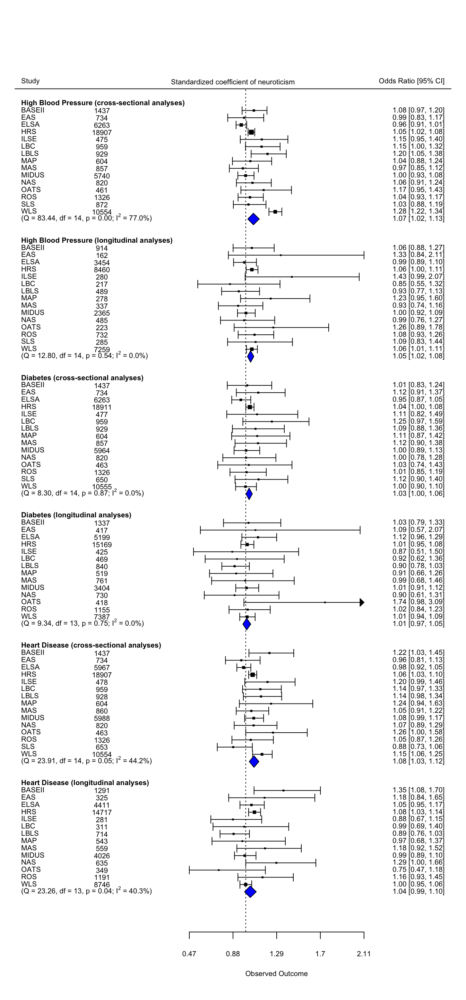

This document organizes and summarizes the main effects of neuroticism on health outcomes, controlling for conscientiousness, across the studies.

The following packages were used to generate this figure:
library(tidyverse)
library(metafor)
library(papaja)
library(here)The files needed for this table are available at osf.io/mzfu9 in the Individual Study Output folder.
First we load the individual study analysis objects.
study.names = c("BASEII", "EAS", "ELSA", "HRS", "ILSE", "LBC",
"LBLS","MAP", "MAS", "MIDUS",
"NAS", "OATS", "ROS", "SLS", "WLS")
load(here("chronic/created data/BASEII_cc_output_nosrh.Rdata"))
load(here("chronic/created data/EAS_cc_nosrh_output.Rdata"))
load(here("chronic/created data/ELSA_cc_output.Rdata"))
load(here("chronic/created data/HRS_cc_output.Rdata"))
load(here("chronic/created data/ILSE_cc_output_nosrh.Rdata"))
load(here("chronic/created data/LBC_cc_output.Rdata"))
load(here("chronic/created data/LBLS_cc_output.Rdata"))
load(here("chronic/created data/MAP_cc_output.Rdata"))
load(here("chronic/created data/MAS_cc_output_nosrh.Rdata"))
load(here("chronic/created data/MIDUS_cc_output_nosrh.Rdata"))
load(here("chronic/created data/nas_cc_output.Rdata"))
load(here("chronic/created data/OATS_cc_output_nosrh.Rdata"))
load(here("chronic/created data/ROS_cc_output.Rdata"))
load(here("chronic/created data/SLS_cc_output.Rdata"))
load(here("chronic/created data/WLS_cc_output.Rdata"))
NAS_cc_output = nas_cc_output
rm(nas_cc_output)We extract the relevant statistics in a loop. (The first author is just learning how to use the purrr package, and so often resorts to loops when under a time constraint.)
We extract the coefficient estimates of neuroticism and the standard errors for each study. We do this separately for the cross-sectional and longitudinal models, so there is one data frame for each.
# cross-sectional models
data_cross_main <- data.frame() # create empty data frame
position <- 0 # start at row 0
for(i in study.names){ # loop through studies
position = position + 1 # increase row by 1
x <- get(paste0(i,"_cc_output")) # get output object
# fill in study-level data
data_cross_main[position, "name"] <- i
#extract coefficient estimates from diabetes model
data_cross_main$neur_est_diab[position] <- x$main_effects$diabetes$cross$coef["z.neur", "Estimate"]
data_cross_main$neur_se_diab[position] <- x$main_effects$diabetes$cross$coef["z.neur", "Std. Error"]
data_cross_main$n_diab[position] <- x$main_effects$diabetes$cross$n
#extract coefficient estimates from high blood pressure model
data_cross_main$neur_est_hbp[position] <- x$main_effects$hbp$cross$coef["z.neur", "Estimate"]
data_cross_main$neur_se_hbp[position] <- x$main_effects$hbp$cross$coef["z.neur", "Std. Error"]
data_cross_main$n_hbp[position] <- x$main_effects$hbp$cross$n
#extract coefficient estimates from heart disease model
if(!is.null(x$main_effects$heart$cross$coef)){
data_cross_main$neur_est_heart[position] <- x$main_effects$heart$cross$coef["z.neur", "Estimate"]
data_cross_main$neur_se_heart[position] <- x$main_effects$heart$cross$coef["z.neur", "Std. Error"]
data_cross_main$n_heart[position] <- x$main_effects$heart$cross$n
}
}
#longitudinal models
data_long_main <- data.frame() # create empty data frame
position <- 0 # start at row 0
for(i in study.names){ # loop through studies
position = position + 1 # increase row by 1
x <- get(paste0(i,"_cc_output")) # get output object
# fill in study-level data
data_long_main[position, "name"] <- i
#extract coefficient estimates from diabetes model
if(!is.null(x$main_effects$diabetes$long$coef)){
data_long_main$neur_est_diab[position] <- x$main_effects$diabetes$long$coef["z.neur", "Estimate"]
data_long_main$neur_se_diab[position] <- x$main_effects$diabetes$long$coef["z.neur", "Std. Error"]
data_long_main$n_diab[position] <- x$main_effects$diabetes$long$n
}
#extract coefficient estimates from high blood pressure model
data_long_main$neur_est_hbp[position] <- x$main_effects$hbp$long$coef["z.neur", "Estimate"]
data_long_main$neur_se_hbp[position] <- x$main_effects$hbp$long$coef["z.neur", "Std. Error"]
data_long_main$con_est_hbp[position] <- x$main_effects$hbp$long$coef["z.con", "Estimate"]
data_long_main$con_se_hbp[position] <- x$main_effects$hbp$long$coef["z.con", "Std. Error"]
data_long_main$n_hbp[position] <- x$main_effects$hbp$long$n
#extract coefficient estimates from heart disease model
if(!is.null(x$main_effects$heart$long$coef)){
data_long_main$neur_est_heart[position] <- x$main_effects$heart$long$coef["z.neur", "Estimate"]
data_long_main$neur_se_heart[position] <- x$main_effects$heart$long$coef["z.neur", "Std. Error"]
data_long_main$n_heart[position] <- x$main_effects$heart$long$n
}
}Next, we use the tools of meta-analysis to estimate the weighted average effect and heterogeneity for each outcome.
# high blood pressure - neuroticism
meta.cross.hbp.neur <- metafor::rma(yi = neur_est_hbp,
sei = neur_se_hbp,
ni = data_cross_main$n_diab,
measure = "OR",
slab = name,
method="REML",
data = data_cross_main)
# diabetes - neuroticism
meta.cross.diab.neur <- metafor::rma(yi = neur_est_diab,
sei = neur_se_diab,
ni = data_cross_main$n_diab,
measure = "OR",
slab = name,
method="REML",
data = data_cross_main)
# heart disease - neuroticism
meta.cross.heart.neur <- metafor::rma(yi = neur_est_heart,
sei = neur_se_heart,
ni = data_cross_main$n_diab,
measure = "OR",
slab = name,
method="REML",
data = data_cross_main)
# ------ meta-analysis: longitudinal ------
# high blood pressure - neuroticism
meta.long.hbp.neur <- metafor::rma(yi = neur_est_hbp,
sei = neur_se_hbp,
ni = data_long_main$n_diab,
measure = "OR",
slab = name,
method="REML",
data = data_long_main)
# diabetes - neuroticism
meta.long.diab.neur <- metafor::rma(yi = neur_est_diab,
sei = neur_se_diab,
ni = data_long_main$n_diab,
measure = "OR",
slab = name,
method="REML",
data = data_long_main)
# heart disease - neuroticism
meta.long.heart.neur <- metafor::rma(yi = neur_est_heart,
sei = neur_se_heart,
ni = data_long_main$n_diab,
measure = "OR",
slab = name,
method="REML",
data = data_long_main)Finally, we put the information into a single forest plot.
neur.data = data.frame(study = c(rep(data_cross_main$name, 3),rep(data_long_main$name, 3)),
outcome = c(rep("diabetes", nrow(data_cross_main)),
rep("high blood pressure", nrow(data_cross_main)),
rep("heart disease", nrow(data_cross_main)),
rep("diabetes", nrow(data_long_main)),
rep("high blood pressure", nrow(data_long_main)),
rep("heart disease", nrow(data_long_main))),
model = c(rep("cross", nrow(data_cross_main)*3),
rep("long", nrow(data_cross_main)*3)),
estimate = c(data_cross_main$neur_est_diab,
data_cross_main$neur_est_hbp,
data_cross_main$neur_est_heart,
data_long_main$neur_est_diab,
data_long_main$neur_est_hbp,
data_long_main$neur_est_heart),
se = c(data_cross_main$neur_se_diab,
data_cross_main$neur_se_hbp,
data_cross_main$neur_se_heart,
data_long_main$neur_se_diab,
data_long_main$neur_se_hbp,
data_long_main$neur_se_heart),
position = c(data_cross_main$n_diab,
data_cross_main$n_hbp,
data_cross_main$n_heart,
data_long_main$n_diab,
data_long_main$n_hbp,
data_long_main$n_heart))
neur.data = neur.data %>%
filter(!is.na(estimate)) %>%
mutate(outcome = factor(outcome,
levels = c("high blood pressure", "diabetes", "heart disease"))) %>%
arrange(outcome, model, study)
#find plot limits
max.ci.mod1 = neur.data %>%
mutate(ci = exp(estimate+1.96*se)) %>%
arrange(desc(ci))
max.ci.mod1 = max.ci.mod1[2, "ci"]
#max.ci.mod1 = max(exp(neur.data$estimate+1.96*neur.data$se))
min.ci.mod1 = min(exp(neur.data$estimate-1.96*neur.data$se))
range.mod1 = max.ci.mod1-min.ci.mod1
lower.mod1 = min.ci.mod1-(range.mod1)
upper.mod1 = max.ci.mod1+(range.mod1)*.5
cex.value = .65
#estimate position of extra information
pos.mod1 = min.ci.mod1-lower.mod1
pos.mod1 = pos.mod1/2
pos.mod1 = c(lower.mod1+1*pos.mod1)
# rows
rows.heart.long = which(neur.data$outcome == "heart disease" & neur.data$model == "long")
rows.heart.long = c(1, length(rows.heart.long))
rows.heart.cross = which(neur.data$outcome == "heart disease" & neur.data$model == "cross")
rows.heart.cross = c(rows.heart.long[2] + 5, rows.heart.long[2] + 4 + length(rows.heart.cross))
rows.diabetes.long = which(neur.data$outcome == "diabetes" & neur.data$model == "long")
rows.diabetes.long = c(rows.heart.cross[2] + 5, rows.heart.cross[2] + 4 + length(rows.diabetes.long))
rows.diabetes.cross = which(neur.data$outcome == "diabetes" & neur.data$model == "cross")
rows.diabetes.cross = c(rows.diabetes.long[2] + 5, rows.diabetes.long[2] + 4 + length(rows.diabetes.cross))
rows.hbp.long = which(neur.data$outcome == "high blood pressure" & neur.data$model == "long")
rows.hbp.long = c(rows.diabetes.cross[2] + 5, rows.diabetes.cross[2] + 4 + length(rows.hbp.long))
rows.hbp.cross = which(neur.data$outcome == "high blood pressure" & neur.data$model == "cross")
rows.hbp.cross = c(rows.hbp.long[2] + 5, rows.hbp.long[2] + 4 + length(rows.hbp.cross))
#forest plot
forest(neur.data$estimate, neur.data$se^2,
xlim = c(lower.mod1, upper.mod1),
alim = c(min.ci.mod1, max.ci.mod1),
cex = cex.value, slab = neur.data$study,
transf=exp,
refline = 1,
ylim = c(-1, max(rows.hbp.cross)+5),
rows = c(rows.hbp.cross[2]:rows.hbp.cross[1],
rows.hbp.long[2]:rows.hbp.long[1],
rows.diabetes.cross[2]:rows.diabetes.cross[1],
rows.diabetes.long[2]:rows.diabetes.long[1],
rows.heart.cross[2]:rows.heart.cross[1],
rows.heart.long[2]:rows.heart.long[1]),
ilab = cbind(neur.data$position),
ilab.xpos = pos.mod1)
### add summary polygons
addpoly(meta.long.diab.neur, row=rows.diabetes.long[1]-1,
cex = cex.value, transf =exp, mlab="", col = "blue")
addpoly(meta.cross.diab.neur, row=rows.diabetes.cross[1]-1,
cex = cex.value, transf =exp, mlab="", col = "blue")
addpoly(meta.long.hbp.neur, row=rows.hbp.long[1]-1,
cex = cex.value, transf =exp, mlab="", col = "blue")
addpoly(meta.cross.hbp.neur, row=rows.hbp.cross[1]-1,
cex = cex.value, transf =exp, mlab="", col = "blue")
addpoly(meta.long.heart.neur, row=rows.heart.long[1]-1,
cex = cex.value, transf =exp, mlab="", col = "blue")
addpoly(meta.cross.heart.neur, row=rows.heart.cross[1]-1,
cex = cex.value, transf =exp, mlab="", col = "blue")
### add text with Q-value, dfs, p-value, and I^2 statistic for subgroups
text(lower.mod1, rows.diabetes.long[1]-1, pos=4, cex = cex.value,
bquote(paste("(Q = ",
.(formatC(meta.long.diab.neur$QE, digits=2, format="f")),
", df = ", .(meta.long.diab.neur$k - meta.long.diab.neur$p),
", p = ", .(formatC(meta.long.diab.neur$QEp, digits=2, format="f")), "; ", I^2, " = ",
.(formatC(meta.long.diab.neur$I2, digits=1, format="f")), "%)")))
text(lower.mod1, rows.diabetes.cross[1]-1, pos=4, cex = cex.value,
bquote(paste("(Q = ",
.(formatC(meta.cross.diab.neur$QE, digits=2, format="f")),
", df = ", .(meta.cross.diab.neur$k - meta.cross.diab.neur$p),
", p = ", .(formatC(meta.cross.diab.neur$QEp, digits=2, format="f")), "; ", I^2, " = ",
.(formatC(meta.cross.diab.neur$I2, digits=1, format="f")), "%)")))
text(lower.mod1, rows.hbp.long[1]-1, pos=4, cex = cex.value,
bquote(paste("(Q = ",
.(formatC(meta.long.hbp.neur$QE, digits=2, format="f")),
", df = ", .(meta.long.hbp.neur$k - meta.long.hbp.neur$p),
", p = ", .(formatC(meta.long.hbp.neur$QEp, digits=2, format="f")), "; ", I^2, " = ",
.(formatC(meta.long.hbp.neur$I2, digits=1, format="f")), "%)")))
text(lower.mod1, rows.hbp.cross[1]-1, pos=4, cex = cex.value,
bquote(paste("(Q = ",
.(formatC(meta.cross.hbp.neur$QE, digits=2, format="f")),
", df = ", .(meta.cross.hbp.neur$k - meta.cross.hbp.neur$p),
", p = ", .(formatC(meta.cross.hbp.neur$QEp, digits=2, format="f")), "; ", I^2, " = ",
.(formatC(meta.cross.hbp.neur$I2, digits=1, format="f")), "%)")))
text(lower.mod1, rows.heart.long[1]-1, pos=4, cex = cex.value,
bquote(paste("(Q = ",
.(formatC(meta.long.heart.neur$QE, digits=2, format="f")),
", df = ", .(meta.long.heart.neur$k - meta.long.heart.neur$p),
", p = ", .(formatC(meta.long.heart.neur$QEp, digits=2, format="f")), "; ", I^2, " = ",
.(formatC(meta.long.heart.neur$I2, digits=1, format="f")), "%)")))
text(lower.mod1, rows.heart.cross[1]-1, pos=4, cex = cex.value,
bquote(paste("(Q = ",
.(formatC(meta.cross.heart.neur$QE, digits=2, format="f")),
", df = ", .(meta.cross.heart.neur$k - meta.cross.heart.neur$p),
", p = ", .(formatC(meta.cross.heart.neur$QEp, digits=2, format="f")), "; ", I^2, " = ",
.(formatC(meta.cross.heart.neur$I2, digits=1, format="f")), "%)")))
###additional text
text(lower.mod1, rows.hbp.cross[2] + 4,
"Study", cex = cex.value, pos = 4)
text(upper.mod1, rows.hbp.cross[2] + 4,
"Odds Ratio [95% CI]", cex = cex.value, pos=2)
text((lower.mod1+upper.mod1)/2, rows.hbp.cross[2] + 4,
"Standardized coefficient of neuroticism", cex = cex.value)
text(lower.mod1, rows.diabetes.cross[2] + 1,
"Diabetes (cross-sectional analyses)", cex = cex.value, pos = 4, font = 2)
text(lower.mod1, rows.diabetes.long[2] + 1,
"Diabetes (longitudinal analyses)", cex = cex.value, pos = 4, font = 2)
text(lower.mod1, rows.hbp.cross[2] + 1,
"High Blood Pressure (cross-sectional analyses)", cex = cex.value, pos = 4, font = 2)
text(lower.mod1, rows.hbp.long[2] + 1,
"High Blood Pressure (longitudinal analyses)", cex = cex.value, pos = 4, font = 2)
text(lower.mod1, rows.heart.cross[2] + 1,
"Heart Disease (cross-sectional analyses)", cex = cex.value, pos = 4, font = 2)
text(lower.mod1, rows.heart.long[2] + 1,
"Heart Disease (longitudinal analyses)", cex = cex.value, pos = 4, font = 2)